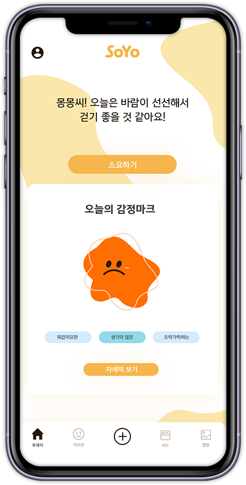
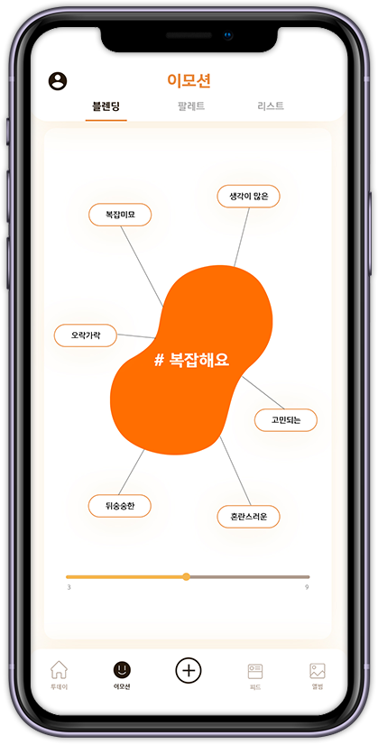
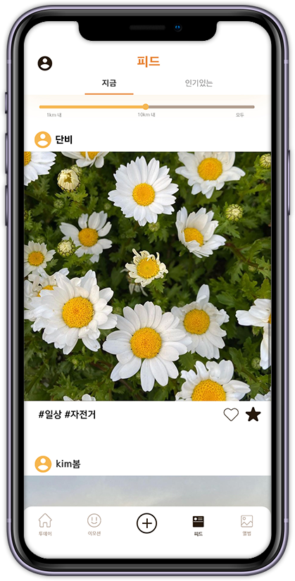
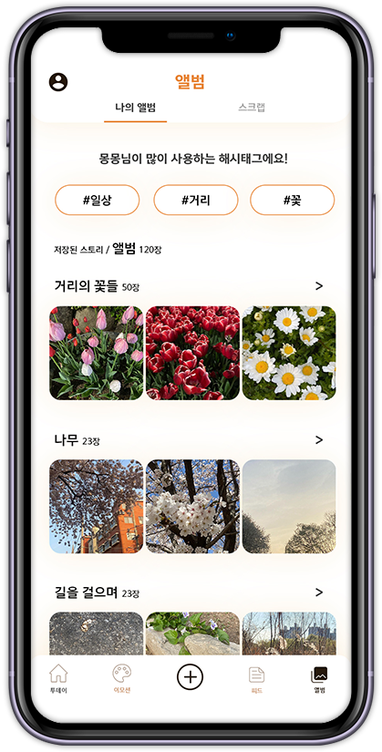

SoYo - 투데이
소요하기를 통해 산책 중 소요와 대화하며
그날 하루 감정을 분석해줍니다.

-
"날씨도 좋은데 산책해보는 건 어때요?"
산책 친구 SoYo가 날씨 정보를 알려주며 산책을 제안합니다.
-
“산책을 시작하여 SoYo와 대화를 나누어 볼까요?”
소요하기 버튼을 눌러 SoYo 와 대화하며 산책합니다.
-
“산책하면서 이런 색깔의 감정을 느끼셨네요?”
산책하며 SoYo 와 나눈 대화를 분석해서 당신의 감정을 알려줍니다.
SoYo - 팔레트
산책 후 기록했던 감정을
지도, 캘린더, 리스트로
확인할 수 있습니다.

-
"오늘도 당신의 무드보드를 채워 볼까요?"
산책 후 감정 분석으로 기록한 색깔들을 이용해서
나만의 지도를 채워 나가요
-
“색깔을 모아 매달 감정 팔레트를 만들어봐요!”
산책을 통해 색깔을 모으고 이 달의 감정 색깔을 제공받아요
-
“좀 더 쉽게 색깔 리스트를 볼까요?”
감정 분석 카드를 리스트 형식으로 간편하게 확인해요
SoYo - 피드
타 사용자가 산책했을 때
남긴 게시물을 범위별로
확인할 수 있습니다.

-
"다른 사람들이 자주 사용하는 해시태그에요!"
다른 사람이 자주 사용하는 해시태그 정보를 알려줘요
-
“당신이 보고싶은 만큼만 설정해요”
설정한 범위 내 다른 사용자가 게시한 또는 인기 있는
스토리를 보여줘요
SoYo - 앨범
사용자의 게시물과 타사용자의
게시물을 스크랩하여 나만의
앨범을 만들 수 있습니다.

-
"혼자 간직하고 볼 수 있어요!"
내가 게시하거나 스크랩한 스토리를 저장해서 볼 수 있어요
-
“당신이 원하는대로 앨범을 만들어봐요”
내가 원하는 방식으로 앨범을 만들고 분류해서 저장할 수 있어요